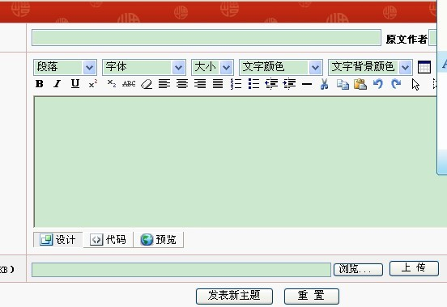

五子棋攻防技巧
#1 五子棋攻防技巧作者：炫飞米熟 发表时间：2011-9-29 22:57:45
五子棋是一种两人对弈的纯策略型棋类游戏，是起源于中国古代的传统黑白棋种之一。容易上手，老少皆宜，而且趣味横生，引人入胜；不仅能增强思维能力，提高智力，而且富含哲理，有助于修身养性。安东是公认的世界上五子棋棋力最强的棋手，他有一套成熟的五子棋技巧理论，非常实用，本文就是这套五子棋技巧理论的图解。
一、该进攻时，不要防守。
法则：越是积极的进攻，越容易获得取胜的机会。
当你的对手走棋不积极时，你不必跟着他走棋，而是要考虑自己的棋是否可以进攻。如图1，白10形成眠三，看起来为下一步进攻做好了准备；但如果你仔细计算，会发现白棋的进攻并没有连续性。因此，我们认为白棋并不积极，黑棋可以落子11形成攻击。有很多棋手会跟着挡在11-C，虽然这不是坏着，但在当前情况下，完全没有必要，这个时候，你应该去进攻而不是防守。
白10应该走A或B点，这样的行棋会更加积极，如此，黑棋就不能走11位攻击了，而是要跟着白棋去防守。
二、进攻始于活二，要尽可能的利用好棋盘上的每一个子，多形成活二。
（图2－1）中，黑棋有不同的选择。黑若走在A点，虽然产生了两个二，但都不是活二，在进攻中几乎毫无威力。而走在B点会产生两个活二，为后续攻击打下了基础。显然B点比A点更有威力。总之，一个原则：一子落下，形成的活二越多越好。 （图2－2）中，黑棋有四种选择（A、B、C、D）来构筑进攻，但D是最佳攻击点，因为它同时产生了3个活二。这跟做棋原则中，“一子三通点往往是好点”相通。
（图2－2）中，黑棋有四种选择（A、B、C、D）来构筑进攻，但D是最佳攻击点，因为它同时产生了3个活二。这跟做棋原则中，“一子三通点往往是好点”相通。
三、在必须防守时，可以选择一个最助于自己进攻的防守点。
（图3－1）中白活三，黑有A、B两个防点来挡住白的活三。由此需要判断哪个防点，更有利于自己的攻击。很显然，走在A点，自己会形成连接，而白棋并无后续手段，由此在黑防A后，需要回头来防守黑棋，这样白就失掉先手。这里，防在A点比B点更有利。 （图3－2）的情况则有不同，黑棋防在A点虽然对自己将来的进攻有利，但黑棋仍然必须防在B点，因为白棋在上面可以连续攻击而获胜。这里提示我们，要判断哪个防点更有利，就必须考虑在防守以后，对手和自己的后续攻击，而后才能选择出正确的防点。
（图3－2）的情况则有不同，黑棋防在A点虽然对自己将来的进攻有利，但黑棋仍然必须防在B点，因为白棋在上面可以连续攻击而获胜。这里提示我们，要判断哪个防点更有利，就必须考虑在防守以后，对手和自己的后续攻击，而后才能选择出正确的防点。 四、防守不总是要挡，有时采取牵制的手段更好。
四、防守不总是要挡，有时采取牵制的手段更好。
（图4）现在轮到黑棋走，黑必须要小心，因为白棋可以在B点连续进攻取胜。因此，黑棋需要提前防守白棋可能的攻击，哪种防守更有利呢？黑棋如果直接阻挡A或B，虽然可以挡住白棋的活二，但之后白会走C，这样局面趋于平衡，黑棋大好形势丧失殆尽。此时，黑棋最好的防守是运用牵制的手段。C点是牵制点，落子C形成多个活二，此时不必再担心白棋在B点的进攻，因为白若B活三，则黑A形成反活三，之后黑棋可连续进攻获胜。 五、所有成功的攻击都要依赖“组合攻击”。
五、所有成功的攻击都要依赖“组合攻击”。
“组合攻击”是指一子落下，同时产生两条或多条攻击线，而且每条线都能取胜，这样对手无法同时防守。组合攻击可以说获胜的唯一之路。
最简单的“组合攻击”有三种类型：三三组合，四四组合和四三组合。根据五子棋禁手规则，黑棋三三和四四是禁手，所以黑棋唯一获胜的方法是四三，而白棋没有禁手的限制。（图5）可以看到三三组合的图例。三三由两个活三组成，每个活三下一步都可以成为活四。图中A、B、C点是三三攻击点；而D和E是假的三三，因为只有一个三是活三，另外一个三是假活三。 （图6）是四四组合的图例。由于四四是黑方的禁手，所以黑方不能走A、C 和E点
（图6）是四四组合的图例。由于四四是黑方的禁手，所以黑方不能走A、C 和E点
#2 Re:五子棋攻防技巧作者：冰雪笑醉 发表时间：2011-9-29 23:06:27
图片先保存到电脑，在上传，图片全没打开#3 Re:五子棋攻防技巧作者：炫飞米熟 发表时间：2011-9-29 23:10:12
= =。。。额。0 - 0为啥我都能看得到#4 Re:五子棋攻防技巧作者：河北穿云 发表时间：2011-9-29 23:15:31
反应下···没图片
#5 Re:Re:五子棋攻防技巧作者：冰雪笑醉 发表时间：2011-9-29 23:17:15
引用：自己是能看到，别人看不到， 你把图片存到桌面，然后点这里与预览 上传！你试下。
原文由 炫飞米熟 发表于 2011-9-29 23:10:12 :
= =。。。额。0 - 0为啥我都能看得到
#6 Re:五子棋攻防技巧作者：小元 发表时间：2011-9-30 10:23:13
图看不见#7 Re:五子棋攻防技巧作者：黑白之巅 发表时间：2011-9-30 13:55:12
原文该是：五子棋技巧图解(作者：Ando)